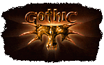
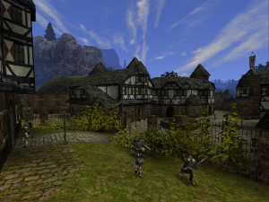

Gothic
Dieser Artikel wurde für die folgenden Ubuntu-Versionen getestet:
Dieser Artikel ist mit keiner aktuell unterstützten Ubuntu-Version getestet! Bitte diesen Artikel testen und das getestet-Tag entsprechend anpassen.
Zum Verständnis dieses Artikels sind folgende Seiten hilfreich:
 Gothic und Gothic II sind die ersten beiden Teile der gleichnamigen Rollenspielserie  des Entwicklers Piranha Bytes. Die Spiele wurden 2001 bzw. 2002 veröffentlicht. Sie funktionieren mit Wine recht problemlos auch unter Linux. Da sie auf der selben Engine basieren, unterscheiden sie sich in Installation und Konfiguration nur unwesentlich.
des Entwicklers Piranha Bytes. Die Spiele wurden 2001 bzw. 2002 veröffentlicht. Sie funktionieren mit Wine recht problemlos auch unter Linux. Da sie auf der selben Engine basieren, unterscheiden sie sich in Installation und Konfiguration nur unwesentlich.
Installation¶
Die Installation der Spiele läuft wie unter Windows ab. Im Falle von Gothic II kann zusätzlich das Add-on "Die Nacht des Raben" installiert werden. [1]
Problembehebung¶
Gothic (2) Installation mit mehreren CDs¶
Die Dateien von CD 2 (und 3) müssen in einen Ordner kopiert werden, der von Wine akzeptiert wird, z.B.:
~/.wine/dosdevices/c:/CD1
Bei der Installation muss dann anstatt die CD zu wechseln einfach das Verzeichnis eingetragen werden. Die direkte Verwendung der CDs funktioniert nicht.
Musik¶
Bei aktivierter Musik starten die Spiele zunächst nicht. Dieses Problem lässt sich auf zweierlei Weise beheben.
Hinzufügen zusätzlicher Bibliotheken¶
Um die Hintergrundmusik genießen zu können, müssen die Bibliotheken dmband.dll, dmime.dll, dmloader.dll, dmstyle.dll, dmsynth.dll, dmusic.dll und dmcompos.dll in den Ordner drive_c/windows/system32 des verwendeten Wineprefix kopiert werden und anschließend als Überschreibungen in winecfg hinzugefügt werden. [2] Die benötigten Dateien lassen sich aus einer Windows-Installation kopieren oder aus dem Internet herunterladen.
Man kann dies auch mit winetricks erledigen:
winetricks directmusic
Musik deaktivieren¶
|  |
| © Piranha Bytes |
Alternativ kann die Musik in der Konfigurationsdatei deaktiviert werden. Diese heißt Gothic.ini und befindet sich im Ordner system des Installationsverzeichnisses. Mit einem beliebigen Texteditor muss der Wert der Variable musicEnabled auf 0 gesetzt werden [3].
Grafik¶
Bei Grafikproblemen, wenn man z.B. im Hauptmenü die Musik hört, aber nichts sehen kann, müssen ggf. noch Grafikeinstellungen angepasst werden. Dazu installiert man zuerst
driconf (universe)
 mit apturl
mit apturl
Paketliste zum Kopieren:
sudo apt-get install driconf
sudo aptitude install driconf
Dann startet man das Programm driconf und setzt unter "Bildqualität" die Option "Aktiviere S3TC Texturkompression auch wenn die Softwareunterstützung fehlt" auf "Ja".
Auflösung¶
Stürzt das Spiel beim Ändern der Auflösung über das Spielmenü ab, kann man diese auch in der Datei Gothic.ini konfigurieren: Der Wert der Variable zVidResFullscreenX gibt die Breite der von verwendeten Auflösung an, zVidResFullscreenY die Höhe.
Logovideos deaktivieren¶
Die störenden Logovideos, die nach dem Starten abgespielt werden, können in der Datei Gothic.ini deaktiviert werden. Dazu wird die Variable playLogoVideos auf 0 gesetzt.
Zwischensequenzen¶
Zwischensequenzen können leider nicht übersprungen werden.
Patches¶
Sowohl für Gothic als auch für Gothic II existieren eine Reihe offizieller und inoffizieller Patches. Auf World of Gothic finden sich Übersichten für den ersten Teil und den Nachfolger . Bei Problemen kann es helfen, die aktuellste Version aufzuspielen.
Demos¶
Die Demoversion des ersten Teils kann von dieser Seite  heruntergeladen werden. Die entsprechende Version für Gothic II findet sich hier .
heruntergeladen werden. Die entsprechende Version für Gothic II findet sich hier .
Infoboxen¶
| Gothic | |
| Genre: | Fantasy-Rollenspiel |
| Sprache: | |
| Veröffentlichung: | 2001 |
| Publisher: | Shoebox |
| Systemvoraussetzungen: | CPU: 400 MHz, 128 MB RAM, 700 MB freier Festplattenspeicher, Grafikkarte mit 16 MB RAM |
| Medien: | CD (2) / DVD (1) |
| Gothic II | |
| Genre: | Fantasy-Rollenspiel |
| Sprache: | |
| Veröffentlichung: | 2002 |
| Publisher: | JoWood |
| Systemvoraussetzungen: | CPU: 700 MHz, 256 MB RAM, 2,2 GB freier Festplattenspeicher, Grafikkarte mit 32 MB RAM |
| Medien: | CD (3) / DVD (1) |
- Erstellt mit Inyoka
-
 2004 – 2017 ubuntuusers.de • Einige Rechte vorbehalten
2004 – 2017 ubuntuusers.de • Einige Rechte vorbehalten
Lizenz • Kontakt • Datenschutz • Impressum • Serverstatus -
Serverhousing gespendet von